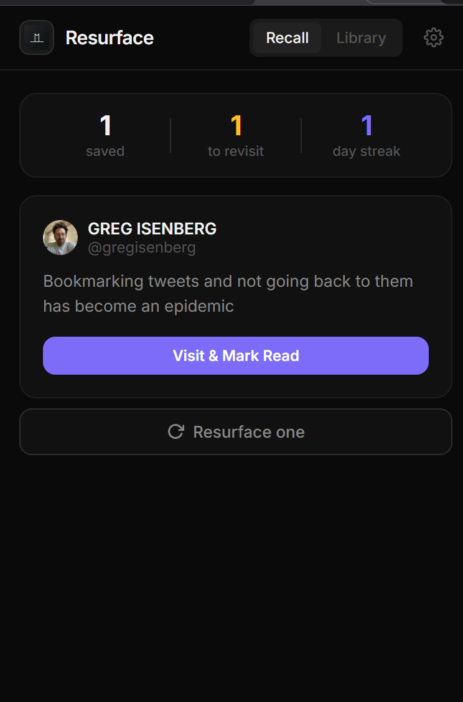
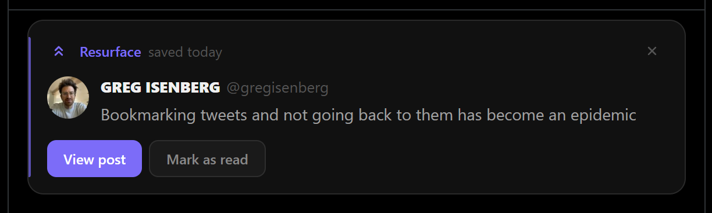
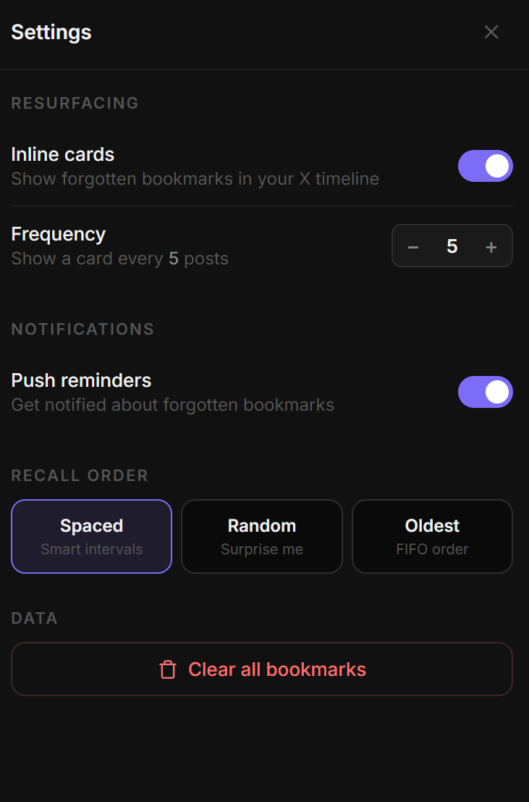

Resurface quietly tracks every post you save on X and brings them back — inline in your timeline, as push notifications, and through spaced repetition.
"Bookmarking tweets and not going back to them has become an epidemic"
— @gregisenberg
See it in action



What's inside
How it works
Resurface intercepts the click and saves it locally — instantly, silently.
Every few posts, a ghost card appears with something you saved and forgot.
Periodic reminders fire with a forgotten bookmark, even when you're not on X.
Once revisited, mark it done. Spaced repetition schedules the next appearance.